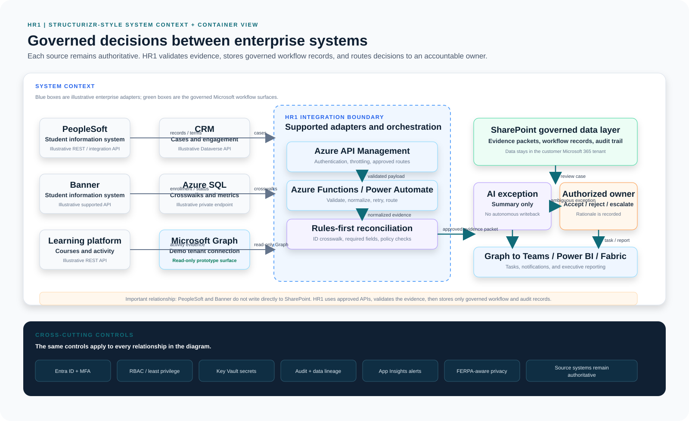
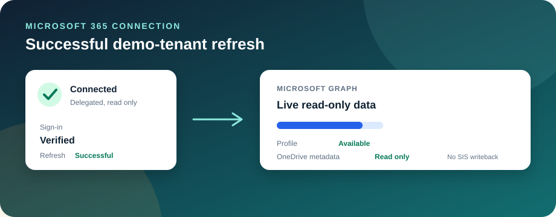

Microsoft AI Applications Integration Workbench
Governed AI for decisions between enterprise systems.
A working higher-education prototype demonstrating how governed AI can connect enterprise systems, assist human decisions, and create auditable workflows.
60-second visual story
See the idea before you read the architecture.
Press play. The story moves from the business problem to a governed outcome in five simple scenes.
Scene 1 of 5
The problem is fragmented data.
A student, staff member, or applicant needs an answer, but the evidence lives in multiple systems.
- 1Problem
- 2Validate
- 3AI assists
- 4Human decides
- 5Outcome
Business view - why it matters
Turn reconciliation into a controlled business process.
Start with the business problem.Understand the current workflow, identify where the data lives, and connect only what is needed to improve the outcome.
Reduce manual reconciliation
Automate straightforward comparisons and send only ambiguous cases to people.
Improve data quality
Identify mismatches before they become downstream problems.
Keep humans accountable
AI recommends; authorized institutional owners decide.
Create an auditable process
Capture the decision, reviewer, rationale and timestamp.
Executive flow
One understandable path from data to accountability
- Enterprise systems
- Validate data
- AI assists with exceptions
- Human decides
- Audit + analytics
Business problem portfolio
Three situations where fragmented records create real operational harm.
Each scenario starts with a person, a measurable pain point, and an accountable decision. The architecture then shows how Microsoft services can coordinate the work without replacing the authoritative system.
Student impact
Use case 01
Student record reconciliation and post-completion disputes
A student returns years after a course and asks why a textbook charge, tuition charge, enrollment status, or completion record is wrong. Staff cannot answer quickly because the evidence is split across systems.
- Primary persona
- Registrar or Student Accounts administrator
- Student harm
- Incorrect balance, blocked transcript, lost refund confidence, or transfer to another institution
- Operational pain
- Staff reconstruct a case manually after turnover, inconsistent IDs, or incomplete historical records
- Trigger
- Refund request, records inquiry, transfer evaluation, audit request, or complaint
SolutionMatch SIS enrollment and charges with LMS attendance, bookstore orders, payment records, support history, and approved policy rules. Produce an evidence timeline for an authorized reviewer. Never issue a refund or alter the SIS automatically.
Open Use Case 1
Chair decision
Use case 02
Online course access, attendance, and refund review
A student says they paid for a class but could not get into the online course. Years later they request a tuition or textbook refund. The chair must decide fairly using evidence, not memory.
- Primary persona
- Department chair or academic program owner
- Student harm
- Paying for an inaccessible course, losing time, delayed completion, or an unresolved financial claim
- Operational pain
- Chair searches separate LMS, SIS, bookstore, payment, help desk, and email records
- Trigger
- Access complaint, grade dispute, refund request, accreditation review, or recurring course failure pattern
SolutionBuild a dated case timeline: enrollment, payment, textbook fulfillment, account activation, login attempts, course access, support contacts, and policy deadlines. AI summarizes gaps and contradictions; the chair decides the remedy.
Open Use Case 2
Recruiting workflow
Use case 03
Recruiter candidate triage and secure routing
Recruiters manually read every application, transcript, resume, and attachment. Strong candidates wait too long, while incomplete or unrelated applications consume the same review time.
- Primary persona
- Internal recruiter or HR talent acquisition partner
- Candidate harm
- Qualified applicants disengage, accept another offer, or never receive a timely response
- Operational pain
- Hours are spent extracting the same requirements and rechecking evidence before a hiring manager sees it
- Trigger
- New application, referral, urgent vacancy, or a candidate approaching a response-time SLA
SolutionUse deterministic requirements first, then AI to summarize relevant experience and identify missing evidence. Route qualified candidates to the recruiter queue, hold unclear cases for review, and never auto-reject based on protected characteristics or opaque scoring.
Open Use Case 3
Live use case lab
Run each scenario from trigger to accountable decision
Each run uses fictional records and shows the same governed pattern: collect evidence, validate rules, assist with ambiguity, route to an owner, and record the decision.
Shared enterprise pattern
One governed workflow, different business owners
1. Identify the harmWhat can go wrong for a student, employee, candidate, or institution?
2. Map the evidenceSIS, LMS, HR, bookstore, payment, email, files, and support systems.
3. Apply safe automationRules clear routine cases. AI summarizes only unresolved ambiguity.
4. Route the decisionMicrosoft Graph sends a task to the accountable owner in Teams or SharePoint.
5. Preserve authorityThe source system remains authoritative; the decision and rationale are audited.
Who to involveCIO for outcomes and riskIT integration team for APIs and operationsRegistrar, chair, HR, or Student Accounts for policy decisionsPrivacy, security, accessibility, and legal reviewers for controls
Governance guardrailsFERPA and purpose limitation for student recordsRBAC and least privilege for case evidenceEEOC, ADA, and bias review for recruiting supportRetention, audit logging, human approval, and appeal path for every consequential decision
FERPA in plain languageStudent education records can only be used for an approved educational purpose, by the right person, with the minimum evidence needed.
Multi-source dashboard
See where the data comes from and what is happening now.
This working demo brings several enterprise sources into one operational view. It shows ownership, location, connection method, freshness, volume, and recent activity.
Live connector monitorOne public deployment connector is live. SIS, LMS and Microsoft 365 cards remain illustrative until an institution authorizes API access.
Source map
Connected system examples
Live activity
Recent data events
How to explain the source map
Every source answers three questions: where, how, and what.
Simple talk track: “These systems remain owners of their data. HR1 reads through supported interfaces, validates and normalizes the evidence, sends only ambiguity to a human owner, and records the outcome for reporting.”
Source systems
Validate and normalize
Review exceptions
Human decision
Business dashboard
CTO / technical view
A governed integration pattern, not an autonomous agent.
Shareable system map
How HR1 moves evidence to an accountable decision


Prototype boundary:Live in HR1: Microsoft Graph demo-tenant sign-in and GitHub REST delivery telemetry. Rafter is represented through a server-side status integration when configured.Illustrative adapters: PeopleSoft, Banner, LMS, CRM, Azure SQL, bookstore/payment, HR/applicant, and support systems require authorized institutional APIs before production use.
Source landscape
Enterprise Systems
PeopleSoftBannerLMSCRMMicrosoft 365
Supported REST / API integrations
Orchestration
Integration Layer
- Azure API Management
- Azure Functions / Power Automate
- Data validation and transformation
- Retry and error handling
Controlled analysis
Decision Layer
- Deterministic matching rules
- Azure AI for unresolved exceptions
- Confidence thresholds
- Human-in-the-loop approval
Only after authorized approval
Controlled outcomes
Approved Actions
SIS API / supported integration serviceControlled system-of-record writeback
Microsoft GraphTeams, SharePoint and Microsoft 365 workflows
Power BI / FabricOperational and adoption reporting
Working prototype
See the governance model in action.
Compare fictional records, review the recommendation, and make an accountable decision.
Unresolved exceptions
Needs human decision
Microsoft enterprise services
A practical path from prototype to governed implementation.
Microsoft 365 workflow simulation
Route the selected exception without changing the SIS
This shows the Teams and SharePoint workflow boundary. It is a browser simulation, so it does not call Graph or write to an institutional system of record.
Live Microsoft 365 connection
Live Microsoft 365 connection (demo tenant)
This is a live, read-only connection to my own Microsoft 365 test tenant using delegated Microsoft Graph permissions (User.Read, Files.Read). Sign-in is limited to that tenant; no institutional accounts or data are used.
Sign-in available for the demo tenant.

Implementation sequence
What an institutional implementation would require
1. Establish identity
Configure Entra ID, application roles, Conditional Access and named owners.
2. Approve integrations
Use supported SIS, LMS and Microsoft APIs with least-privilege credentials.
3. Validate controls
Evaluate rules, model behavior, privacy, retention and human approval gates.
4. Measure operations
Publish throughput, exception aging, adoption and audit-coverage measures.
Purpose of the sequence
The approach moves from identity, to approved integrations, to validated controls, to measurable operations. That lets business leaders understand the outcome and technical teams understand exactly where controls live.
Deployment and operating model
Two practical ways to keep institutional data inside Microsoft controls.
The choice depends on the customer's Azure plan, security requirements, and operating ownership.
Proposed service level
Clear ownership after deployment
Avva Thach owns the application operating runbook, release coordination, access review, and first-line incident response during the agreed support window.
Critical outageAcknowledge within 1 hour; restore or establish a workaround within 4 hours.
High-impact defectAcknowledge within 4 business hours; remediation plan within 1 business day.
Standard requestAcknowledge within 1 business day; schedule through the change backlog.
Security eventContain access, preserve logs, notify named owners, and document root cause and remediation.
Microsoft 365 workflow example
Graph records an approved decision in SharePoint
This is an audit/workflow action, not an SIS write. SIS writeback uses that system's supported integration service.
Power BI / Fabric concept
Operational health
How I work
A practical approach for turning complexity into measurable, governed outcomes.
This section shows a repeatable pattern: clarify the outcome, map the evidence, align the owners, choose the right guardrails, prove value with a pilot, and scale what works.
Scaled change model
A 90-day operating model for aligning people, work, and outcomes
This original model shows how to align leaders, teams, planning, delivery, and measurement over a practical 90-day change cycle.
Operational security posture
Security Assurance
A public, sanitized view of the latest automated HR1 scan. Detailed findings remain administrator-only.
Public summary only. Rafter credentials, raw findings, and scan payloads stay server-side. Synthetic demonstration data is used throughout this prototype.
Teams / Power Automate critical-finding notification: Proposed, not connected.
Administrator actions appear only after authenticated Microsoft sign-in.
Security operations
From secure sign-in to root-cause analysis
Security is part of the workflow, not a separate report at the end. Each event can be tied to an identity, a system, a decision, and an accountable owner.
1. Secure accessMicrosoft Entra ID, MFA, role-based access, and least privilege control who can view data or approve an action.
2. Detect and alertApplication Insights and approved monitoring identify unusual failures, blocked actions, and integration drift without exposing sensitive data.
3. Find the root causeInvestigators correlate the timestamp, identity, source system, rule result, and workflow step before deciding what to fix.
LOGIN→EVENT→ALERT→ROOT CAUSE→ACCOUNTABLE FIX
Access decision example
A record is never shown until identity and role checks pass.
For a reconciliation request, the gateway first compares the source identifier, target identifier, signed-in user, and permitted business scope. A mismatch returns no record details, creates an audit event, and alerts the owner when policy requires it.
Accountability
Every human decision leaves a record.
| Time | Record | Decision | Reviewer | Rationale |
|---|
Prototype notes
Demonstration boundaries and reference material
All people and records shown here are fictional. The architecture is illustrative and does not claim that any institution is migrating between named student information systems.